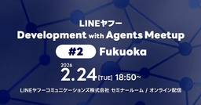

LINEヤフー Tech Blog (LY Corporation Tech Blog
https://techblog.lycorp.co.jp
LINEヤフー株式会社のサービスを支える、技術・開発文化を発信しています。
フィード

LINEヤフーのエンジニアの動向を知る：State of LY 2025実施レポート 1
1
LINEヤフー Tech Blog (LY Corporation Tech Blog
LINEヤフーでは、2024年に引き続き、2025年も社内の開発者を対象としたアンケート「State of LY 2025」を実施しました（昨年度の実施レポート）。昨年はWebフロントエンド開発者のみ...
3日前
LINE iOSアプリにWebKitの新API「WebPage」を導入できず、自前で実装した件 1
LINEヤフー Tech Blog (LY Corporation Tech Blog
はじめにこんにちは、iOSアプリエンジニアのKiichiです。LINE iOSアプリでアプリ内ブラウザなど、Webまわりの開発を担当しています。普段はUIKitをベースに機能改善や新機能開発を進めつつ...
4日前
2026年4月の技術系イベント予定
LINEヤフー Tech Blog (LY Corporation Tech Blog
LINEヤフー株式会社では、技術に関するイベントや勉強会の主催・協賛などを行っています。最新情報は各リンク先でご確認ください。タイミングによっては、申し込み開始前や既に満席となっていることがあります。...
4日前
ベクトル検索エンジンValdの長期運用で見えたパフォーマンス最適化とベストプラクティス 2
LINEヤフー Tech Blog (LY Corporation Tech Blog
はじめに私たちは、社内のプラットフォームにおいて、Cloud NativeなANN（近似最近傍探索）ベクトル検索エンジン「Vald」のマネージドシステムを約4年間にわたり運用・開発してきました。本記事...
5日前

「LINEヤフー Development with Agents Meetup #2」を開催しました！（イベントレポート）
LINEヤフー Tech Blog (LY Corporation Tech Blog
こんにちは。LINEヤフーの永吉です。2月24日（火）、「LINEヤフー Development with Agents Meetup #2」を開催しました。今回のMeetupは、Orchestrat...
6日前
わずか9秒の「事前タスク」でクラウドソーシング実験のデータ品質向上（CHI 2026採択論文解説）
LINEヤフー Tech Blog (LY Corporation Tech Blog
こんにちは。LINEヤフー研究所でヒューマンコンピュータインタラクション（HCI）分野の研究をしている山中です。クラウドソーシングで収集したデータを使って、とても精度が良いとされているモデルに当てはめ...
6日前

創発的なコミュニケーションが生まれる新感覚の一日！React Tokyo フェス 2026 イベントレポート
LINEヤフー Tech Blog (LY Corporation Tech Blog
皆さんこんにちは。花谷（@potato4d）です。今回は2月28日に開催された React Tokyo フェス 2026 について、LINEヤフーとしてスポンサーを行いました。本記事では、イベント本編...
10日前
社内におけるAI駆動開発の知見共有をテーマとしたLINEヤフー Development with Agents Meetup #1 東京を開催しました
LINEヤフー Tech Blog (LY Corporation Tech Blog
2026年2月17日、当社主催の「LINEヤフー Development with Agents Meetup #1」を紀尾井町オフィスとオンラインの同時開催で実施しました。会場参加は定員100名で満...
11日前
第58回情報科学若手の会 参加レポート：社内のネットワークでの取り組みについて発表しました
LINEヤフー Tech Blog (LY Corporation Tech Blog
こんにちは、ソフトウェアエンジニアの多根（@SEED0228777）です。普段は、検索領域で地域情報検索システムのためのプラットフォームを開発・運用しております。2025年10月11日から13日の3日...
12日前
LINEアプリにおける複数人トークとグループトークの統合
LINEヤフー Tech Blog (LY Corporation Tech Blog
この記事は、合併前の旧ブログに掲載していた記事（初出：2022年2月24日）を、現在のブログへ移管したものです。内容は初出時点のものです。LINEアプリは1対1の会話だけでなく、複数ユーザーでの会話に...
13日前
直感的な検索を目指して（『ベクトル検索実践入門』を執筆しました）
LINEヤフー Tech Blog (LY Corporation Tech Blog
こんにちは。LINEヤフー株式会社で検索エンジン開発のマネジメントを行っている真鍋です。検索のなかでも、今回はベクトル検索についてお話しします。ベクトル検索は、LINEヤフーでも検索や広告配信、レコメ...
13日前
AI×福岡×横断で“試す”を加速：Tech Link Fukuoka #2レポート
LINEヤフー Tech Blog (LY Corporation Tech Blog
はじめにこんにちは！DevRelの井上です。2026年1月、福岡拠点にて開催した「Tech Link Fukuoka #2」についてご紹介します。Tech Link Fukuokaは、LINEヤフーの...
19日前
Swaggerを使ったAPIドキュメントの作成と、バックエンドとフロントエンド間の連携
LINEヤフー Tech Blog (LY Corporation Tech Blog
この記事は、合併前の旧ブログに掲載していた記事（初出：2020年11月25日）を、現在のブログへ移管したものです。内容は初出時点のものです。こんにちは。LINE Growth Technology福岡...
19日前
AI活用スキル向上ワークショップ「Orchestration Development Workshop」記事一覧
LINEヤフー Tech Blog (LY Corporation Tech Blog
LINEヤフーでは、開発業務に関わる全てのエンジニアを対象に、AI活用スキルを実践的に高めるワークショップ「Orchestration Development Workshop」を開始しました。この取...
24日前
同時接続数30万超のチャットサービスのメッセージ配信基盤をRedis Pub/SubからRedis Streamsにした話
LINEヤフー Tech Blog (LY Corporation Tech Blog
この記事は、合併前の旧ブログに掲載していた記事（初出：2023年9月5日）を、現在のブログへ移管したものです。現時点の情報に合わせ、表記やリンクの調整を行っています。Overview30万を超える同時...
25日前
3日間で技術書を書き上げる - 執筆ハッカソンイベント「Bookathon」 協賛レポート
LINEヤフー Tech Blog (LY Corporation Tech Blog
こんにちは、Dev Content DivisionのDiv Leadをしているmochikoです。LINEヤフー株式会社で開発者向けのドキュメントを書くテクニカルライターとして働く傍ら、個人としても...
25日前
2026年3月の技術系イベント予定
LINEヤフー Tech Blog (LY Corporation Tech Blog
LINEヤフー株式会社では、技術に関するイベントや勉強会の主催・協賛などを行っています。最新情報は各リンク先でご確認ください。タイミングによっては、申し込み開始前や既に満席となっていることがあります。...
1ヶ月前
[MySQL Workbench] VISUAL EXPLAIN でインデックスの挙動を確認する
LINEヤフー Tech Blog (LY Corporation Tech Blog
この記事は、合併前の旧ブログに掲載していた記事（初出：2018年8月20日）を、現在のブログへ移管したものです。現時点の情報に合わせ、表記やリンクの調整を行っています。開発3センターでサーバサイドの開...
1ヶ月前
Kotlin Fest 2025：コードレビュー問題集
LINEヤフー Tech Blog (LY Corporation Tech Blog
こんにちは。Yahoo!オークションでAndroidアプリの開発を担当している高松です。2025年11月1日（土）に開催されたKotlin Fest 2025にて、LINEヤフー株式会社は「ことりプラ...
1ヶ月前
未来のクラウドを創る
LINEヤフー Tech Blog (LY Corporation Tech Blog
こんにちは。クラウドサービスCBUに所属し、開発サービスを支えるプライベートクラウドを担当しているYoung Hee Parkです。LINEヤフーでは、エンジニアがサービス開発に必要とするインフラおよ...
1ヶ月前
似た商品が見つかる！ Yahoo!ショッピングの類似画像検索 〜 近傍探索NGTの導入事例
LINEヤフー Tech Blog (LY Corporation Tech Blog
この記事は、合併前の旧ブログに掲載していた記事（初出：2019年7月3日）を、現在のブログへ移管したものです。内容は初出時点のものです。Yahoo!ショッピングの大元です。この度、類似画像検索のサービ...
1ヶ月前
1ミリ秒でも速く。地震の揺れを可視化する「リアルタイム震度」の処理の工夫
LINEヤフー Tech Blog (LY Corporation Tech Blog
この記事は、合併前の旧ブログに掲載していた記事（初出：2021年3月8日）を、現在のブログへ移管したものです。現時点の情報に合わせ、表記やリンクの調整を行っています。こんにちは。Yahoo!天気・災害...
1ヶ月前
Git submoduleを使ってマルチリポジトリなMonorepoを管理する
LINEヤフー Tech Blog (LY Corporation Tech Blog
この記事は、合併前の旧ブログに掲載していた記事（初出：2023年2月20日）を、現在のブログへ移管したものです。内容は初出時点のものです。こんにちは、LINEフロントエンド開発センターの玉田です。新春...
1ヶ月前
Web フォントを使って contenteditable から脱出する
LINEヤフー Tech Blog (LY Corporation Tech Blog
この記事は、合併前の旧ブログに掲載していた記事（初出：2022年1月19日）を、現在のブログへ移管したものです。内容は初出時点のものです。こんにちは、LINE フロントエンド開発センターの玉田です。突...
1ヶ月前
Scaling to infinity：LINEヤフーにおける可観測性プラットフォームの進化
LINEヤフー Tech Blog (LY Corporation Tech Blog
こんにちは。LINEヤフーの Observability Infrastructure チームで、社内向け時系列データベース（TSDB）の開発と運用を担当している Gi Jun Ohです。LINEヤフ...
1ヶ月前
ベクターデータベースとAgent SkillsでRAGシステムを作ろう！ - 全開発者向けワークショップ開催レポート
LINEヤフー Tech Blog (LY Corporation Tech Blog
こんにちは！モバイルデベロッパーエクスペリエンスチームの@giginetです。普段はLINE iOSアプリを中心に、ビルドシステムや開発環境の整備、開発者体験向上のための仕事をしています。先日、LIN...
1ヶ月前
生成AIの利活用事例に関するLT会を開催しました！ Hacking Fest 2025 Winter 開催レポート
LINEヤフー Tech Blog (LY Corporation Tech Blog
2026年1月21日、自部署の生成AI利活用を推進する有志の集まりで主催した「Hacking Fest 2025 Winter」を開催しました。Hacking Festとは？Hacking Fest ...
1ヶ月前
コミュニティと共に成長する実践的なセキュリティ知識、LINE CTF
LINEヤフー Tech Blog (LY Corporation Tech Blog
こんにちは。セキュリティエンジニアのSEOK KI YEOです。LINEヤフー株式会社は、2021年から毎年、グローバルセキュリティ技術大会であるLINE CTFを開催しています。LINE CTFは、...
1ヶ月前
GPU上の推論サーバーのパフォーマンスチューニング方法
LINEヤフー Tech Blog (LY Corporation Tech Blog
この記事は、合併前の旧ブログに掲載していた記事（初出：2023年8月29日）を、現在のブログへ移管したものです。内容は初出時点のものです。こんにちは。ヤフーで画像認識技術の研究開発を担当している湛です...
1ヶ月前
ヤフートップページの裏側：記事推薦システムの試行錯誤と今後の挑戦
LINEヤフー Tech Blog (LY Corporation Tech Blog
この記事は、合併前の旧ブログに掲載していた記事（初出：2023年2月27日）を現在のブログへ移管したもので、2022年11月開催の「Tech-Verse 2022」で発表したセッションを要約した内容で...
2ヶ月前
CopilotからPilotへ：Agentic Codingで実装〜PRを自動化
LINEヤフー Tech Blog (LY Corporation Tech Blog
こんにちは。LINEヤフー株式会社の平野です。普段はYahoo!ファイナンスの主にフロントエンド領域の開発とスクラムマスターを担当しています。LINEヤフー全エンジニアを対象とした AI利活用を横断的...
2ヶ月前
アクセシビリティカンファレンス福岡 2025 参加・協賛レポート
LINEヤフー Tech Blog (LY Corporation Tech Blog
テクノロジーエンハンスメントディビジョン WebアクセシビリティWG 富田です。2025年12月6日に開催されたアクセシビリティカンファレンス福岡 2025にプラチナスポンサーとして参加しました。本イ...
2ヶ月前
Android版LINEにおけるGoogle Play Billing「アプリ内メッセージ」の導入検証
LINEヤフー Tech Blog (LY Corporation Tech Blog
こんにちは。LINEアプリのAndroid開発を担当しているRaphaelです。サブスクリプションサービスにおいて、避けては通れない課題の一つが「解約」です。解約には、ユーザーが自ら止める「自発的な解...
2ヶ月前
LINEヤフーのクラウド基盤刷新：巨大な2つのクラウドを統合する次世代基盤「Flava」のアーキテクチャ
LINEヤフー Tech Blog (LY Corporation Tech Blog
こんにちは。LINEヤフーでプライベートクラウドのインフラを担当している井上です。LINEヤフーの膨大なトラフィックとデータを支えているのは、私たち自らが開発・運用している大規模なプライベートクラウド...
2ヶ月前
2026年2月の技術系イベント予定
LINEヤフー Tech Blog (LY Corporation Tech Blog
LINEヤフー株式会社では、技術に関するイベントや勉強会の主催・協賛などを行っています。最新情報は各リンク先でご確認ください。タイミングによっては、申し込み開始前や既に満席となっていることがあります。...
2ヶ月前
Google Fontsで使うLINE Seed JP（最速表示のためのベストプラクティス）
LINEヤフー Tech Blog (LY Corporation Tech Blog
こんにちは、フロントエンドエンジニアの岡崎です。2022年にリリースしたLINEのコーポレートフォント「LINE Seed JP」は、おかげさまで多くのプロジェクトで採用されてきました。これまではセル...
2ヶ月前
Claude Code × MCPで実現するPRレビュー準備の自動化 ——週6時間のレビュー工数を削減した実践例——
LINEヤフー Tech Blog (LY Corporation Tech Blog
はじめに：大規模プロジェクト復帰とレビュー負荷の課題こんにちは、DevRelの大熊です。本記事では、育休復帰直後という制約の大きい状況の中で、AIを活用したコードレビューの仕組みを構築し、週6時間の業...
2ヶ月前
安全は基本、コスト削減はおまけ：AIサービスに独立したガードレールが必要な理由
LINEヤフー Tech Blog (LY Corporation Tech Blog
はじめに：ガードレールとは？AIを安全に使用するためのさまざまな仕組みを総称して、一般的に「ガードレール（guardrails）」と呼びます。自動車の走行中、道路から外れたり対向車線にはみ出したりする...
2ヶ月前
HuBERTで音声言語モデルの性能を改善
LINEヤフー Tech Blog (LY Corporation Tech Blog
この記事は、合併前の旧ブログに掲載していた記事（初出：2023年3月29日）を、現在のブログへ移管したものです。現時点の情報に合わせ、表記やリンクの調整を行っています。こんにちは。ヤフーの音声認識エン...
2ヶ月前
ラベルなしの音声データを用いて言語理解が可能に？音声言語モデルの性能改善手法のご紹介
LINEヤフー Tech Blog (LY Corporation Tech Blog
この記事は、合併前の旧ブログに掲載していた記事（初出：2021年6月21日）を、現在のブログへ移管したものです。現時点の情報に合わせ、表記やリンクの調整を行っています。こんにちは。ヤフーの音声認識エン...
2ヶ月前
ポジティブ？ネガティブ？ツイートの感情分析にBERTを活用した事例紹介 〜 学習データのラベル偏りに対する取り組み
LINEヤフー Tech Blog (LY Corporation Tech Blog
この記事は、合併前の旧ブログに掲載していた記事（初出：2021年5月17日）を、現在のブログへ移管したものです。現時点の情報に合わせ、表記やリンクの調整を行っています。こんにちは、自然言語処理システム...
2ヶ月前
LINE iOSアプリ開発を高速化するClaude Code基盤の設計思想
LINEヤフー Tech Blog (LY Corporation Tech Blog
こんにちは。モバイルデベロッパーエクスペリエンスチームの@giginetです。ここわずか1年あまりで、コーディングAIを用いた開発は日常的なものになりました。LINEアプリの開発においても、Claud...
2ヶ月前
Kotlin Fest 2025にブース出展しました！
LINEヤフー Tech Blog (LY Corporation Tech Blog
2025年11月1日（土）に開催されたKotlin Fest 2025にて、LINEヤフーは「ことりプラン」として協賛しました。本記事では、スポンサーブース運営目線・参加者目線・スタッフ目線から、準備...
2ヶ月前
LINE iOSアプリにおけるローカルビルドメトリクス基盤の構築と活用
LINEヤフー Tech Blog (LY Corporation Tech Blog
こんにちは！モバイルデベロッパーエクスペリエンスチームの@giginetです！普段はLINEアプリの基盤改善をしています。LINE iOSは巨大なプロジェクトです。日々、開発者が多くの時間をビルドに費...
2ヶ月前
MCPサーバーの安全な利活用を社内に広める：MCPサーバー連携による開発効率化の実践講座
LINEヤフー Tech Blog (LY Corporation Tech Blog
こんにちは。LINEヤフー株式会社のaikawaです。普段はYahoo!マップ・Yahoo!乗換案内のiOSアプリ開発を担当しつつ、iOS領域のDeveloper Relationsも担当しています。...
2ヶ月前
ソフトウェアロードバランサにおけるWeighted Load Balancingの実装と動的負荷分散への応用（インターンレポート）
LINEヤフー Tech Blog (LY Corporation Tech Blog
香川大学大学院創発科学研究科修士1年の芝昌隆です。私は2025年夏季インターンシップで6週間、LINEヤフーのCloud Infrastructure本部に所属し、プライベートクラウドで提供しているソ...
2ヶ月前
「LINEヤフー Developer Meetup #2 in Fukuoka」を開催しました！（イベントレポート）
LINEヤフー Tech Blog (LY Corporation Tech Blog
こんにちは。LINEヤフーの永吉です。今回は2025年の締めくくりとして開催した「LINEヤフー Developer Meetup #2 in Fukuoka」の様子を振り返ります。イベント概要12月...
3ヶ月前
コンテキスト・エンジニアリング：VibeコーダーからAIオーケストレーターへ
LINEヤフー Tech Blog (LY Corporation Tech Blog
前回の投稿「AIコーディング：「Vibe Coding」からプロフェッショナルへ」では、AIオーケストレーターへの道のりで「コンテキスト管理」をベストプラクティス#6として紹介しました。しかし、あれは...
3ヶ月前
Vue Fes Japan 2025 クイズ解説
LINEヤフー Tech Blog (LY Corporation Tech Blog
こんにちは、Webフロントエンドエンジニアの水迫、芝山、福田です。先日開催された「Vue Fes Japan 2025」にて、LINEヤフー株式会社は昨年に続きゴールドスポンサーとして参加しました。L...
3ヶ月前
フロントエンドに新たな灯がともる一日！フロントエンドカンファレンス関西2025協賛レポート＆AI利活用サーベイ紹介
LINEヤフー Tech Blog (LY Corporation Tech Blog
はじめにこんにちは！ LINEヤフー SWAT ユニットでフロントエンドエンジニアをしている柴坂浩行です。2025年11月30日に開催された フロントエンドカンファレンス関西2025 に、LINEヤフ...
3ヶ月前